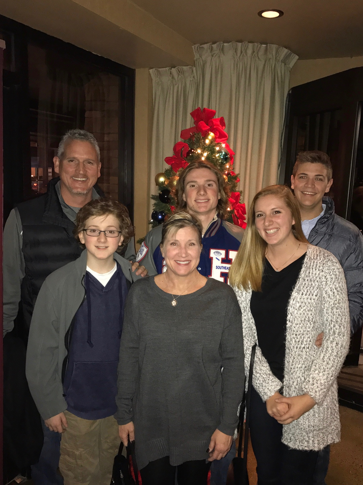
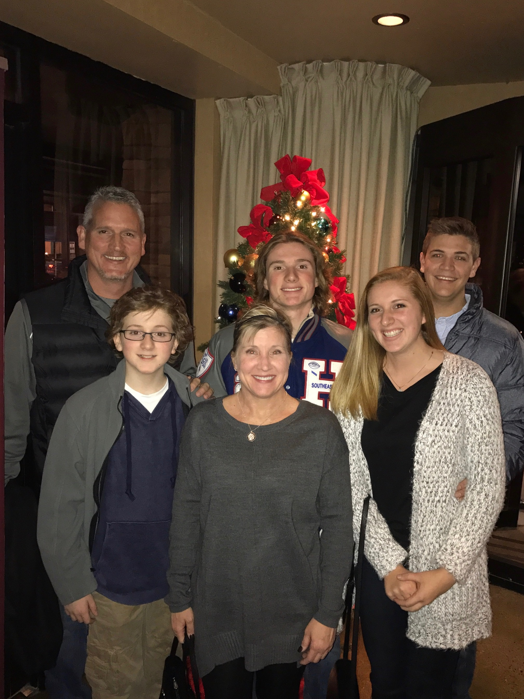

Background Information
My name is Hayden. I am from Fishers Indiana and currently live in downtown Indianapolis. Growing up, I went through Hamilton Southeastern & Fishers school system. I then moved on the Ball State University where I spent four years working on my bachelor’s degree in marketing and Digital Media. While also going through school, I decided to work with a company by the name of MacAllister Machinery where I worked for the entirety of my school terms. Once I had graduated from Ball State, I was offered a job from the same company as an Inside Sales Representative for renting out construction equipment. I found that the industry was a very toxic and older populated company. I didn’t seem to fit in with the crowd and eventually I had enough. That is what brought me here today, to improve what was already taught to me about software engineering by my minor in school. I look forward to jump starting my digital career as a professional in the software engineering field!